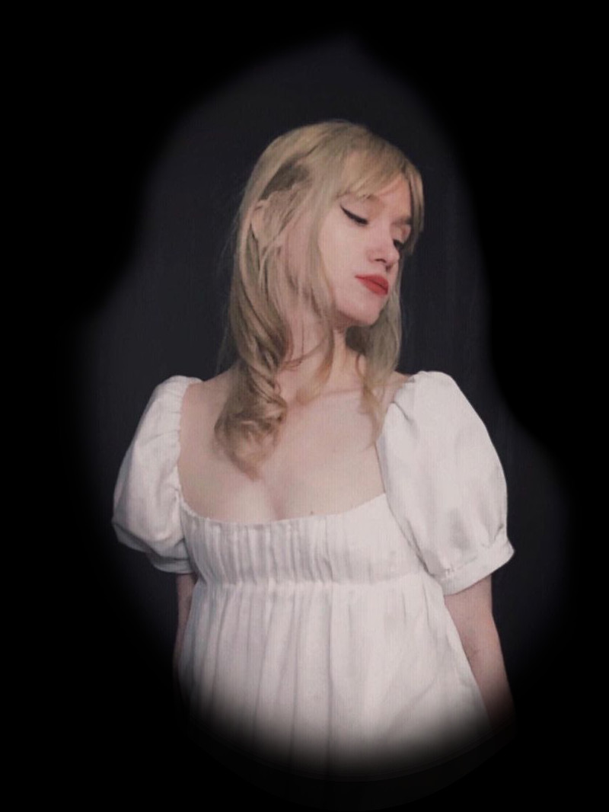

step out of the light
and into the darkness...


and into the darkness...
what do you see when you enter the Fantasy Realm?
fireflies dance around, fading in and out like a heartbeat
the shadows of the trees tower around you, as still as castles against the moonlit sky
a unicorn lifts its head from the brook from which it sips gracefully. it runs, silently, into the forest
as you walk through the forest, the moonvines bloom around you to welcome you to the Fantasy Realm.




what do you hear as you walk through the Fantasy Realm?
the beating of an owl's wings as it flies overhead
design for this site:
- css fireflies
- ultimatefantasyrealm.com?
- long hair extensions